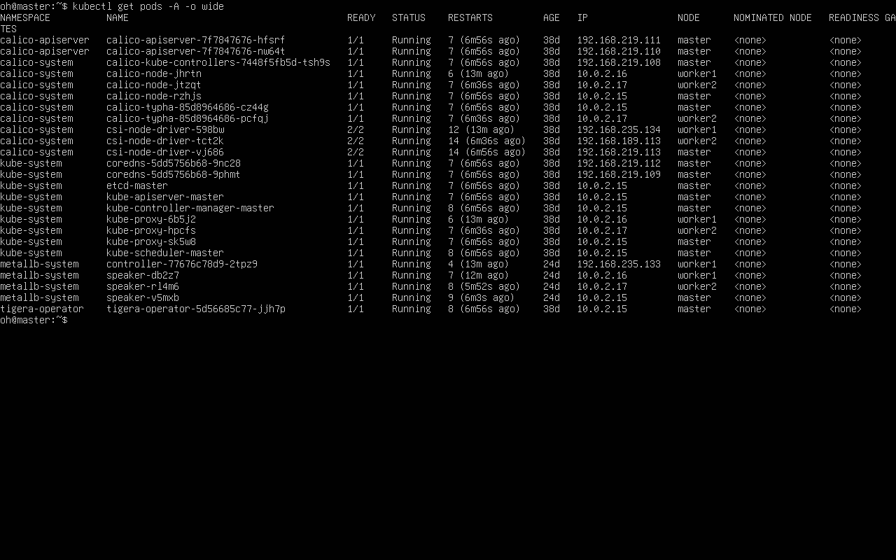
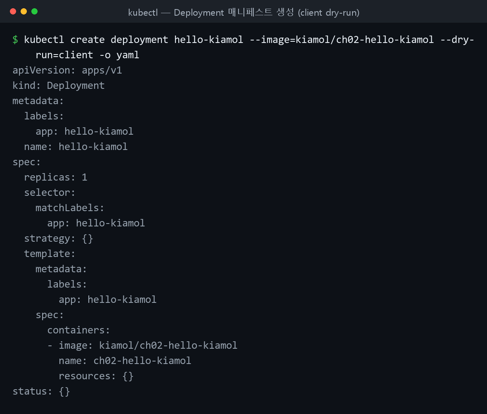
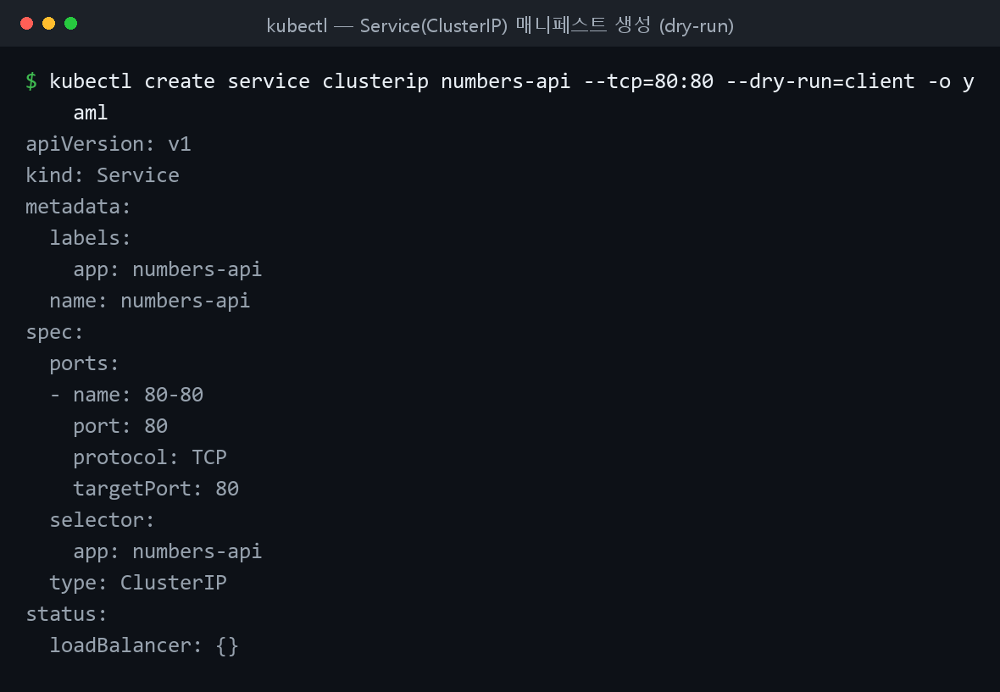
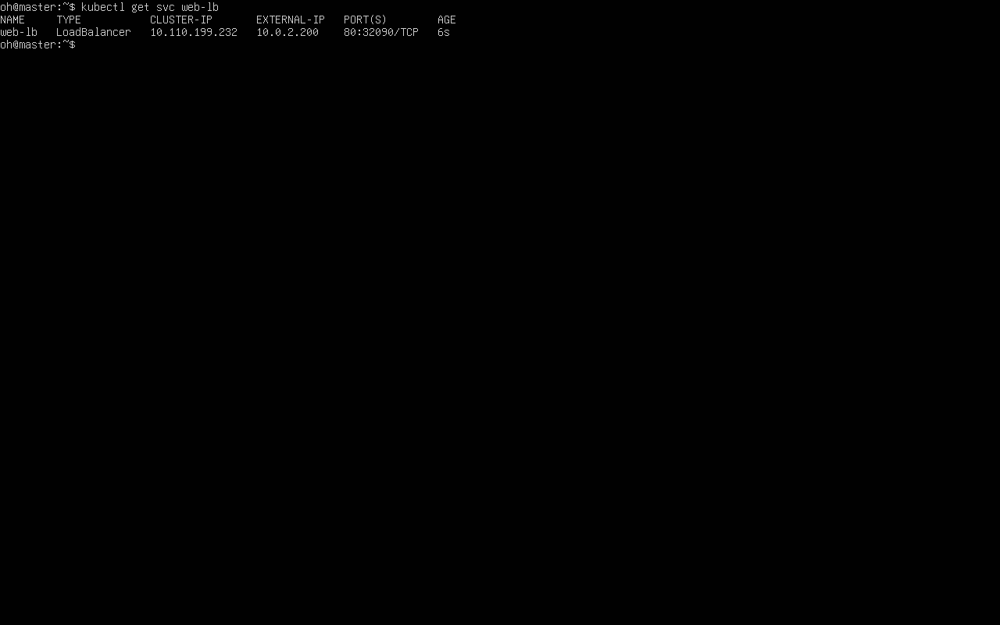
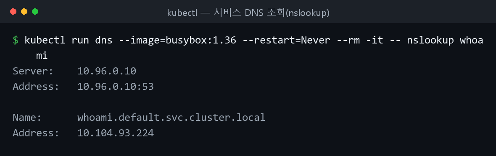

파드 · 디플로이먼트 · 서비스(네트워크)
쿠버네티스 초급. 파드 실행 → 디플로이먼트(컨트롤러) → 매니페스트(YAML) 선언적 배포 → 서비스로 통신 순서로 실습했다.
파드 실행
컨테이너는 단독으로 동작하지 않고 파드(Pod) 에 담겨 동작한다. 간단한 파드는 명령행에서 바로 실행한다.
kubectl run hello-kiamol --image=kiamol/ch02-hello-kiamol # 파드 하나 실행
kubectl wait --for=condition=Ready pod hello-kiamol # 준비 상태 대기
kubectl get pods # 파드 목록
kubectl describe pod hello-kiamol # 상세 정보
출력 형식은 커스터마이징할 수 있다.
# 원하는 열만 출력
kubectl get pod hello-kiamol --output custom-columns=NAME:metadata.name,NODE_IP:status.hostIP,POD_IP:status.podIP
# JSONPath로 특정 항목만 출력
kubectl get pod hello-kiamol -o jsonpath='{.status.containerStatuses[0].containerID}'

▲ 직접 구축한 클러스터의
kubectl get pods -A -o wide — Calico·CoreDNS·MetalLB 등 시스템 파드가 세 노드에 분산되어 Running.
자가치유
쿠버네티스는 파드에 필요한 컨테이너 개수를 유지한다. 컨테이너를 직접 지워도 대체 컨테이너가 생성된다.
# 파드에 포함된 컨테이너를 강제 삭제
docker container rm -f $(docker container ls -q --filter label=io.kubernetes.container.name=hello-kiamol)
kubectl get pod hello-kiamol # 컨테이너가 다시 생성됨
포트포워딩
kubectl port-forward 는 로컬 포트로 들어온 트래픽을 파드 포트로 임시 전달한다(디버깅용).
kubectl port-forward pod/hello-kiamol 8080:80 # 로컬 8080 → 파드 80, ctrl-c로 중단
port-forward 후 브라우저 화면
(http://localhost:8080 의 hello-kiamol 페이지 캡처)
디플로이먼트
디플로이먼트는 파드를 관리하는 컨트롤러 객체다. 현재 상태가 바람직한 상태와 다르면 자동으로 보정한다(노드 고장 시 대체 파드 실행 등).
kubectl create deployment hello-kiamol-2 --image=kiamol/ch02-hello-kiamol # 디플로이먼트 생성
kubectl get pods
디플로이먼트는 관리 대상 파드에 레이블 을 부여하고 레이블 셀렉터 로 식별한다.
# 디플로이먼트가 부여한 레이블 출력
kubectl get deploy hello-kiamol-2 -o jsonpath='{.spec.template.metadata.labels}'
kubectl get pods -l app=hello-kiamol-2 # 해당 레이블 파드 목록
파드 레이블을 셀렉터와 다르게 바꾸면 컨트롤러가 관리 대상에서 제외하고 부족분을 채우려 파드를 하나 더 만든다.
kubectl label pods -l app=hello-kiamol-2 --overwrite app=hello-kiamol-x # 레이블 변경 → 파드 추가됨
kubectl get pods -o custom-columns=NAME:metadata.name,LABELS:metadata.labels
kubectl label pods -l app=hello-kiamol-x --overwrite app=hello-kiamol-2 # 원복 → 여분 정리
kubectl port-forward deploy/hello-kiamol-2 8080:80 # 디플로이먼트에도 포트포워딩
레이블 수정으로 파드가 추가된 화면
(레이블 변경 직후 파드가 하나 늘어난 NAME·LABELS 목록 캡처)
매니페스트로 배포
매니페스트는 주로 YAML 로 쓰며 apiVersion 과 kind 로 시작한다. --dry-run=client -o yaml 로 골격을 생성할 수 있다.

▲
kubectl create deployment ... --dry-run=client -o yaml 로 디플로이먼트 매니페스트를 직접 생성해 본 결과(로컬 실행). apiVersion·kind·spec.selector·template 구조가 한눈에 보인다.
pod.yaml — 컨테이너 하나를 실행하는 단일 파드.
apiVersion: v1
kind: Pod
metadata:
name: hello-kiamol-3 # 이름은 필수, 레이블은 선택
spec:
containers: # 파드는 실행할 컨테이너를 정의해야 한다
- name: web # 컨테이너는 이름과 이미지로 정의된다
image: kiamol/ch02-hello-kiamol
kubectl apply -f 로 적용한다. 로컬 파일과 원격 URL 모두 가능하다.
kubectl apply -f pod.yaml # 로컬 매니페스트로 배포
kubectl get pods
# 원격 URL 매니페스트로 바로 배포
kubectl apply -f https://raw.githubusercontent.com/sixeyed/kiamol/master/ch02/pod.yaml
deployment.yaml — apps/v1 API. 셀렉터(spec.selector.matchLabels)와 파드 템플릿(spec.template)을 정의한다.
apiVersion: apps/v1
kind: Deployment
metadata:
name: hello-kiamol-4
spec:
selector: # 디플로이먼트가 관리 대상을 찾는 셀렉터
matchLabels:
app: hello-kiamol-4
template: # 파드를 만들 때 쓰는 템플릿
metadata:
labels:
app: hello-kiamol-4 # 셀렉터와 일치하는 레이블이어야 한다
spec:
containers:
- name: web
image: kiamol/ch02-hello-kiamol
셀렉터와 템플릿 레이블은 반드시 일치해야 한다
spec.selector.matchLabels 와 spec.template.metadata.labels 가 다르면 컨트롤러가 자기 파드를 인식하지 못한다.
kubectl apply -f deployment.yaml # 디플로이먼트 실행
kubectl get pods -l app=hello-kiamol-4 # 만들어진 파드 확인
컨트롤러가 만든 리소스는 직접 지워도 컨트롤러가 다시 만든다. 정말 없애려면 컨트롤러를 삭제한다.
kubectl delete pods --all # 파드 전체 삭제해도
kubectl get pods # 디플로이먼트가 되살림
kubectl delete deploy --all # 컨트롤러를 삭제해야 제거됨
kubectl get all
서비스로 통신
파드 IP는 파드가 대체될 때마다 바뀐다. 서비스(Service)는 고정 도메인 네임을 제공해 이 문제를 푼다(어드레스 디스커버리). 서비스 이름은 클러스터 내부 DNS에 등록된다.

▲
kubectl create service clusterip ... --dry-run=client -o yaml 로 생성한 ClusterIP 서비스 매니페스트(로컬 실행). spec.selector 와 ports 로 어떤 파드에 어떤 포트로 연결할지 정의한다.
파드 IP가 바뀌는 것부터 두 sleep 디플로이먼트로 확인한다.
cd ch03
kubectl apply -f sleep/sleep1.yaml -f sleep/sleep2.yaml # 디플로이먼트 둘 생성
kubectl wait --for=condition=Ready pod -l app=sleep-2
# 두 번째 파드 IP 확인 후 그 IP로 ping
kubectl get pod -l app=sleep-2 --output jsonpath='{.items[0].status.podIP}'
kubectl exec deploy/sleep-1 -- ping -c 2 $(kubectl get pod -l app=sleep-2 --output jsonpath='{.items[0].status.podIP}')
kubectl delete pods -l app=sleep-2 # 파드 대체 → IP가 바뀐다
kubectl get pod -l app=sleep-2 --output jsonpath='{.items[0].status.podIP}'
sleep2-service.yaml — 기본 유형인 ClusterIP 서비스. 클러스터 내부에서만 유효한 IP를 부여한다.
apiVersion: v1
kind: Service
metadata:
name: sleep-2 # 서비스 이름이 도메인 네임으로 쓰인다
spec:
selector:
app: sleep-2 # app=sleep-2 인 모든 파드가 대상이다
ports:
- port: 80 # 80 포트를 주시하다 파드의 80 포트로 전달
kubectl apply -f sleep/sleep2-service.yaml
kubectl get svc sleep-2
kubectl exec deploy/sleep-1 -- ping -c 1 sleep-2 # ping은 막혀도 DNS 이름은 해소됨
파드 간 통신 — ClusterIP
내부 API를 호출하는 웹 애플리케이션(numbers). API용 서비스가 없으면 Go 버튼이 오류를 낸다.
kubectl apply -f numbers/api.yaml -f numbers/web.yaml # 웹·API 디플로이먼트 실행
kubectl wait --for=condition=Ready pod -l app=numbers-web
kubectl port-forward deploy/numbers-web 8080:80 # http://localhost:8080, Go 버튼 → 오류
api-service.yaml 로 API용 ClusterIP 서비스를 배포하면 웹이 서비스 이름으로 API를 찾으므로 API 파드가 대체돼도 정상 동작한다.
apiVersion: v1
kind: Service
metadata:
name: numbers-api
spec:
ports:
- port: 80
selector:
app: numbers-api
type: ClusterIP
Go 버튼 정상 동작 화면
(API 서비스 배포 후 무작위 숫자가 출력되는 화면 캡처)
외부 트래픽 — LoadBalancer
외부 트래픽을 파드로 전달하려면 LoadBalancer 서비스를 쓴다. 외부 EXTERNAL-IP로 접근한다.
apiVersion: v1
kind: Service
metadata:
name: numbers-web
spec:
ports:
- port: 8080 # 서비스가 주시하는 포트
targetPort: 80 # 트래픽이 전달될 파드의 포트
selector:
app: numbers-web
type: LoadBalancer
kubectl apply -f numbers/web-service.yaml # 방화벽 허용을 물으면 허용
kubectl get svc numbers-web
# EXTERNAL-IP로 애플리케이션 URL 출력
kubectl get svc numbers-web -o jsonpath='http://{.status.loadBalancer.ingress[0].*}:8080'

▲ LoadBalancer 서비스에 MetalLB가
EXTERNAL-IP 10.0.2.200 을 할당 — 클러스터 외부에서 이 주소로 접근 가능.
ExternalName과 헤드리스
클러스터 외부 컴포넌트는 ExternalName 서비스로 로컬 이름을 외부 도메인(CNAME)에 연결한다.
apiVersion: v1
kind: Service
metadata:
name: numbers-api
spec:
type: ExternalName
externalName: raw.githubusercontent.com # 로컬 이름을 해소할 외부 도메인
kubectl delete svc numbers-api
kubectl apply -f numbers-services/api-service-externalName.yaml
kubectl exec deploy/sleep-1 -- sh -c 'nslookup numbers-api | tail -n 5' # CNAME 연결 확인
selector 없이 Endpoints 에 정적 IP를 직접 적으면 헤드리스 서비스 가 된다.
apiVersion: v1
kind: Service
metadata:
name: numbers-api
spec:
type: ClusterIP
ports: # selector 가 없으므로 헤드리스 서비스
- port: 80
---
kind: Endpoints
apiVersion: v1
metadata:
name: numbers-api
subsets:
- addresses: # 정적 IP 주소 목록
- ip: 192.168.123.234
ports:
- port: 80
kubectl apply -f numbers-services/api-service-headless.yaml
kubectl get svc numbers-api
kubectl get endpoints numbers-api
엔드포인트와 네임스페이스
엔드포인트(Endpoints)는 서비스가 가리키는 파드 IP 목록이며, 파드가 대체되면 자동 갱신된다.
kubectl get endpoints sleep-2
kubectl delete pods -l app=sleep-2 # 엔드포인트가 새 IP로 갱신됨
kubectl get endpoints sleep-2
네임스페이스는 클러스터를 논리적으로 분할한다. -n 으로 대상을 지정하며, FQDN은 서비스.네임스페이스.svc.cluster.local 형태다. 내부 DNS는 kube-system 의 kube-dns가 담당한다.
kubectl get svc -n kube-system
# FQDN으로 DNS 조회
kubectl exec deploy/sleep-1 -- sh -c 'nslookup numbers-api.default.svc.cluster.local | grep "^[^*]"'

▲ 클러스터 내부 DNS가 서비스 이름
whoami 를 ClusterIP(10.104.93.224)로 해소한다.
막혔던 점
- 서비스 이름으로 ping 실패 → ClusterIP에서 ICMP는 막힌 경우가 많음. HTTP 요청이나 nslookup으로 검증.
- 파드를 지워도 되살아남 → 디플로이먼트의 관리 대상이라 그렇다.
kubectl delete deploy ...로 컨트롤러를 삭제. - 레이블을 바꿨더니 파드 추가 → 셀렉터 불일치로 관리 제외됨. 레이블 원복으로 정리.
- Go 버튼 오류 → api-service 미배포로 이름 해소 실패. API용 ClusterIP 배포로 해결.
- LoadBalancer EXTERNAL-IP
<pending>→ 플랫폼에 따라 제공 방식 다름. 방화벽 허용 후 노드 IP/포트나 NodePort로 대체. delete --all은 현재 네임스페이스 전체를 지움 → 실행 전-n으로 대상 확인.